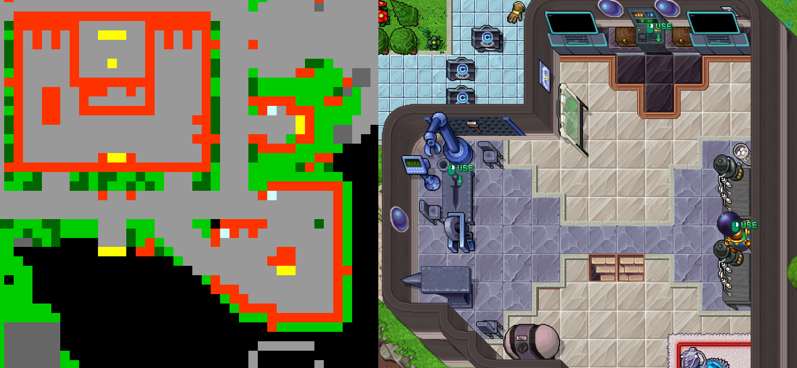

System Rzadkości nadaje dodatkowe, losowe atrybuty do przedmiotów, które można na siebie założyć (ekwipunku), czyniąc je znacznie silniejszymi i cenniejszymi. Im wyższy stopień rzadkości przedmiotu, tym potężniejsze statystyki oferuje i tym trudniej go zdobyć.
*Poniższa tabela przedstawia przykładowe wartości obliczone dynamicznie dla przedmiotu na 250 poziom (Level).
| Atrybut | Mnożnik | Normal | Rare | Epic | Legendary | Mythical |
|---|---|---|---|---|---|---|
| ✨ Ki Level | x1 | 1 – 2 | 1 – 2 | 1 – 2 | 1 – 3 | 1 – 3 |
| 🪓 Attack Speed Skill | x1 | 1 – 2 | 1 – 2 | 1 – 2 | 1 – 3 | 1 – 3 |
| ⚔️ Sword Skill | x1 | 1 – 2 | 1 – 2 | 1 – 2 | 1 – 3 | 1 – 3 |
| 👊 Glove Skill | x1 | 1 – 2 | 1 – 2 | 1 – 2 | 1 – 3 | 1 – 3 |
| ❤️ Maks. Życie | x700 | 100 – 1400 | 100 – 1400 | 100 – 1400 | 100 – 2100 | 100 – 2100 |
| 🔷 Maks. Ki | x700 | 100 – 1400 | 100 – 1400 | 100 – 1400 | 100 – 2100 | 100 – 2100 |
| 💚 Heal Spell | x100 | 10 – 200 | 10 – 200 | 10 – 200 | 10 – 300 | 10 – 300 |
| 🔥 Power (Moc) | x95 | 855 – 2850 | 998 – 3325 | 1140 – 3800 | 1283 – 4275 | 1425 – 4750 |

Ważne Uwagi (Observações Importantes):
• Zasada unikalności: Żaden atrybut nie może się powtórzyć w obrębie jednego przedmiotu. Każdy bonus może wylosować się tylko jeden jedyny raz.
• Skalowanie przedmiotu opiera się bezpośrednio na jego poziomie bazowym oraz poziomie rzadkości.